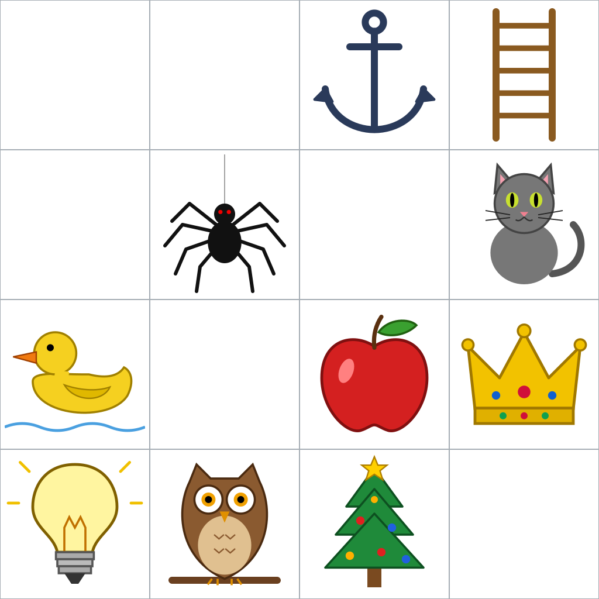

Ответы Opus 5.5 по SVG
21 ноября 2026 года модель дала 144 верных ответа из 148. Для каждого из четырёх вопросов с ошибкой приведены оба ответа модели — по картинке и по исходному коду SVG.
Повороты и сдвиги на поле 4×4
Каждый вопрос начинался с одного и того же поля. Нужно было мысленно передвинуть предметы и определить, откуда пришёл предмет в указанной конечной клетке. Первое число — строка сверху, второе — столбец слева. Балл давали за исходную клетку.
Вопрос 2. Откуда пришёл предмет в клетку (3,4)?
Поле повернули на 90° против часовой стрелки, четвёртую строку сдвинули вправо, затем четвёртый столбец — вверх.
- По картинке · ошибка
- 3,2 |
- По коду SVG · верно
- 3,1 | утка
Утка прошла путь (3,1) → (4,3) → (4,4) → (3,4). Выбранная моделью клетка (3,2) изначально была пустой. Поле для названия она оставила пустым.
Вопрос 10. Откуда пришёл предмет в клетку (3,2)?
- По картинке · ошибка
- 3,4 | корона
- По коду SVG · верно
- 4,3 | ёлка
После двенадцати команд в конечной клетке оказалась ёлка. Корона действительно стояла в (3,4). Opus верно назвала предмет в выбранной ею клетке и ошиблась при определении исходных координат.
Все 12 команд вопроса 10
Каждый сдвиг циклический, на одну клетку. Каждый поворот — на 90°. Для квадрата 2×2 указана его верхняя левая клетка.
- Квадрат (3,2) против часовой стрелки.
- Квадрат (2,3) против часовой стрелки.
- Строку 3 вправо.
- Квадрат (3,1) против часовой стрелки.
- Столбец 1 вниз.
- Строку 1 влево.
- Квадрат (1,3) против часовой стрелки.
- Всё поле против часовой стрелки.
- Строку 2 влево.
- Всё поле против часовой стрелки.
- Квадрат (1,1) по часовой стрелке.
- Квадрат (2,1) по часовой стрелке.

Кухонная полка
Какой предмет стоит непосредственно под чайником и слева от бирюзовой кружки?
- По картинке · верно
- кофемолка
- По коду SVG · ошибка
- сундук

Переплетённые шнуры
К розетке какого цвета ведёт шнур от квадрата? Слева серые приборы, справа цветные розетки. На пересечениях каждый шнур идёт своей линией.
- По картинке · ошибка
- зелёный
- По коду SVG · верно
- жёлтый